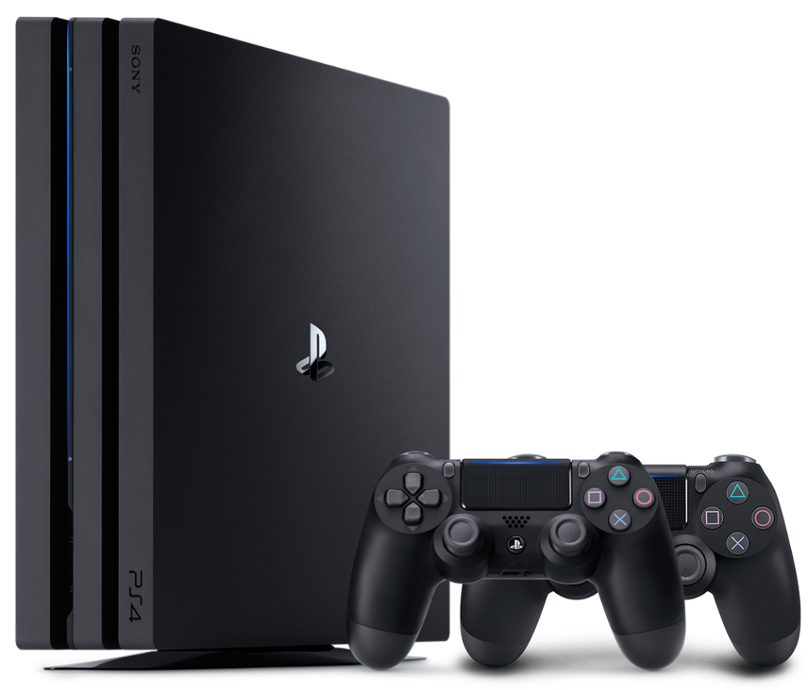
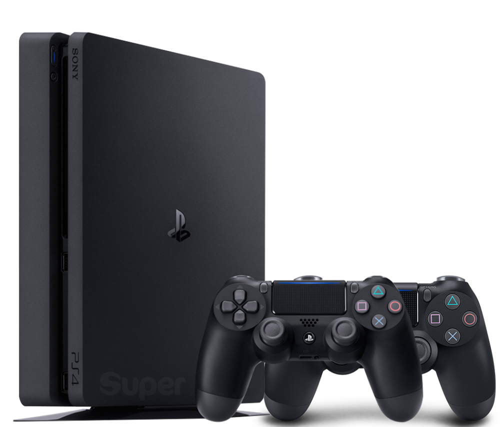
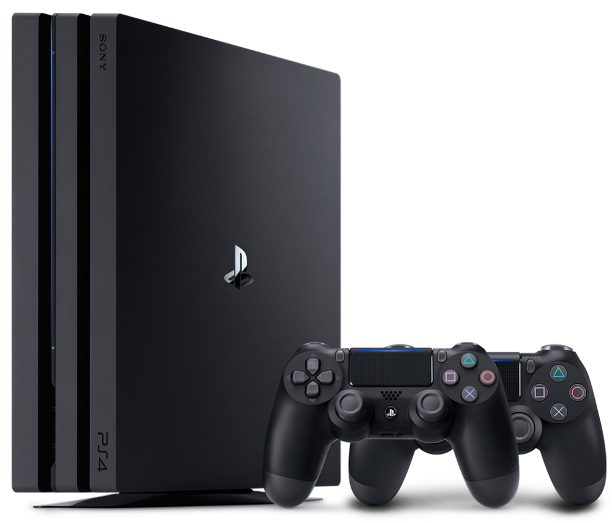
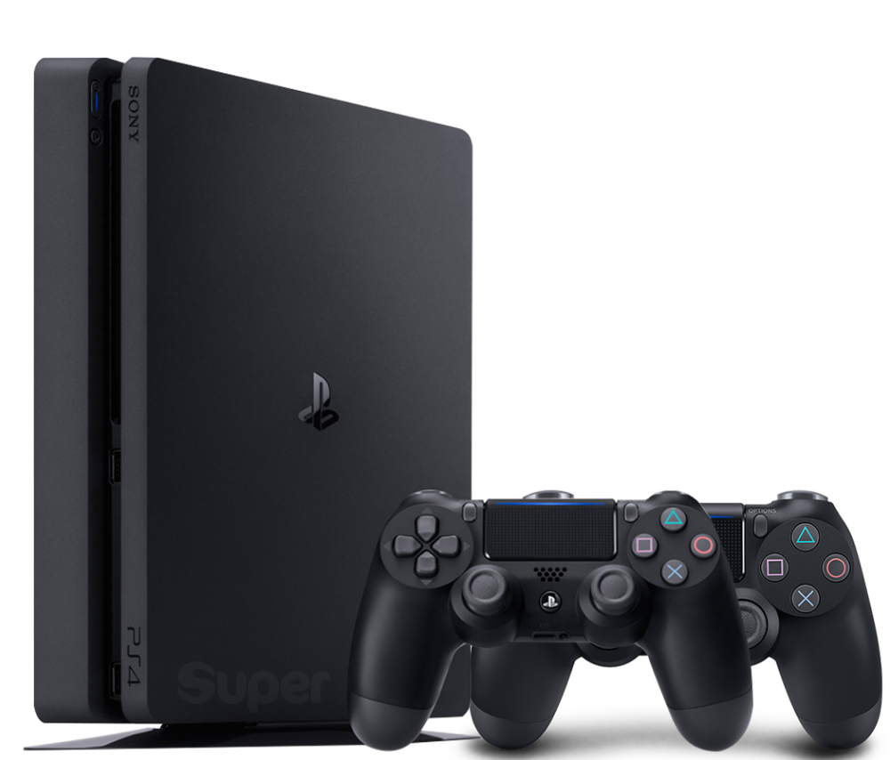

Процессор: 8-ядерный CPU AMD Jaguar (2,1 ГГц)
Графический чип: 36 блоков AMD Radeon GCN (911 МГц)
Память: 8Gb GDDR5, 218 Гбит/с
Рейтинг мощности: 4,20 Терафлопс
Накопители: Blu-Ray, HDD на 1Tb
Максимальное разрешение: 4K/Ultra HD (3840x2160)
Wi-Fi: 802.11n (2,4 и 5 ГГц)
Потребление (max): 310 Вт
Вес: 3,3 кг
Цена: 37,999.00 ₽
Процессор: 8-ядерный CPU AMD Jaguar (1,6 ГГц)
Графический чип: 18 блоков AMD Radeon GCN (800 МГц)
Память: 8Gb GDDR5, 176 Гбит/с
Рейтинг мощности: 1,84 Терафлопс
Накопители: Blu-Ray, HDD на 500Gb или 1Tb
Максимальное разрешение: Full HD (1920x1080)
Wi-Fi: 802.11n (2,4 и 5 ГГц)
Потребление (max): 165 Вт
Вес: 2,1 кг
Цена: 29,990.00 ₽